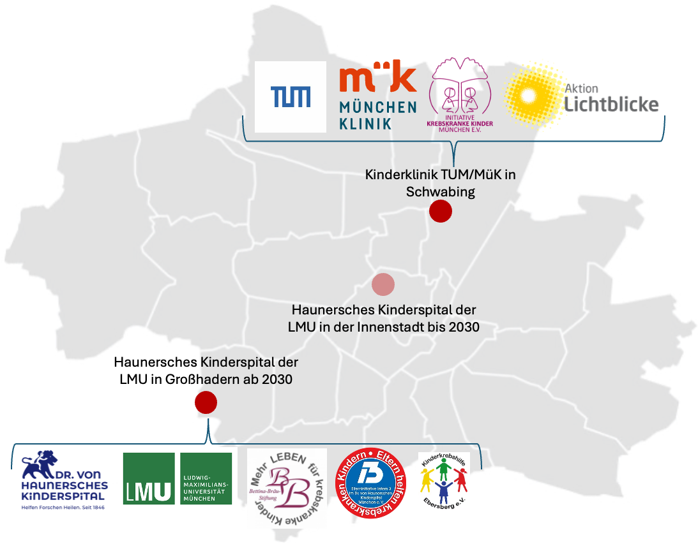
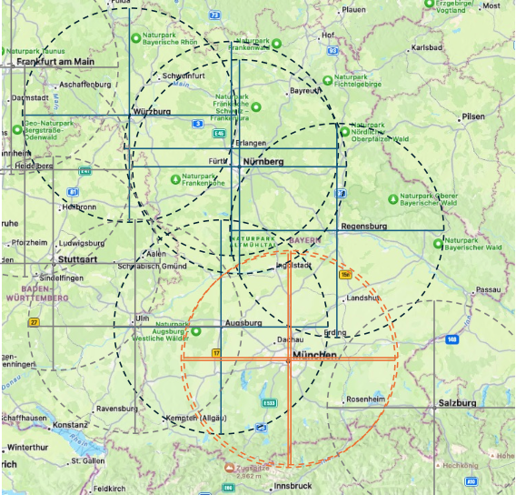
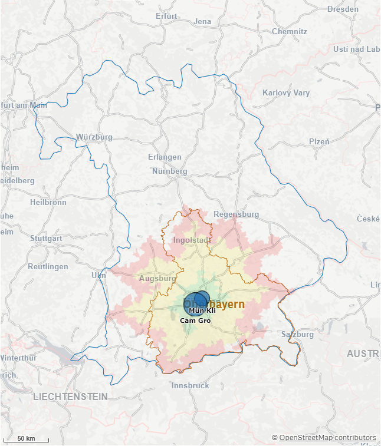

Komplexe Versorgung verteilt sich auf mehrere Einheiten.
Diagnostik, stationäre Therapie, Tagesklinik, Nachsorge und Forschung sind inhaltlich eng verknüpft, werden aber in parallelen Strukturen vorgehalten.
Allianz für Kindergesundheit
In München gibt es in unmittelbarer Nähe zwei kinderonkologische Behandlungszentren. Was spricht für eine Bündelung? Eine ganze Reihe von Argumenten zeigt, dass ein Versorgungszentrum der Spitzenmedizin gravierende Vorteile bieten würde.
Ausgangslage
In München bestehen mit dem Haunerschen Kinderspital der LMU und der Kinderklinik München Schwabing der München Klinik / TUM zwei Standorte für pädiatrische Onkologie und Hämatologie. Es stellt sich die Frage, welche Struktur künftig medizinisch, personell und baulich am tragfähigsten ist.
Diagnostik, stationäre Therapie, Tagesklinik, Nachsorge und Forschung sind inhaltlich eng verknüpft, werden aber in parallelen Strukturen vorgehalten.
Aus anderen Bereichen der Medizin ist der Zusammenhang zwischen hoher Fallzahl, Komplikationsmanagement und Ergebnisqualität gut belegt.
Translationale Medizin, molekulare Diagnostik, Studienzugang und Langzeitnachsorge brauchen attraktive Strukturen für Expertinnen und Experten.
Best Practice Niederlande
Das Prinses Máxima Centrum in Utrecht gilt als international beachtetes Modell für die pädiatrische Onkologie. Es bündelt die Behandlung krebskranker Kinder in den Niederlanden an einem nationalen Zentrum und koppelt diese Struktur eng mit Forschung, Diagnostik, Studien und Nachsorge.
Entscheidend ist das Prinzip: seltene und komplexe Krankheitsbilder brauchen Erfahrung, Spezialisierung und schnell verfügbare interdisziplinäre Entscheidungen. Gleichzeitig müssen Familien nicht für jede Routineleistung maximal weit fahren.
Für München entsteht daraus eine konkrete Leitfrage: Welche Elemente lassen sich übertragen, damit hohe Expertise zentral verfügbar ist und wohnortnahe Versorgung dort erhalten bleibt, wo sie medizinisch sinnvoll ist?
Einzugsgebiet
Die vorläufige Analyse im Factsheet zeigt: Eine strukturelle Bündelung in München würde die lokale und regionale Erreichbarkeit voraussichtlich nicht wesentlich verändern, weil die beiden Kliniken das gleiche Einzugsgebiet abdecken und gemeinsam leichter ambulante Versorgungsstrukturen in der Region aufbauen könnten.



Seltene Erkrankungen mit breitem Spektrum
Das Deutsche Kinderkrebsregister weist für Bayern 338 gemeldete Neuerkrankungen p.a. aus. Bei sieben Kinderonkologischen Zentren in Bayern ergibt das im Durchschnitt eine Anzahl von 48 Neuerkrankungen pro Klinik und Jahr.
Die Möglichkeiten in der kinderonkologischen Diagnostik und Therapie werden immer besser, aber damit auch zunehmend komplexer und differenzierter. Das erfordert Spezialisierung bzw. Subspezialisierung innerhalb der Behandlungsteams.
gemeldete Neuerkrankungen p.a.
bayerische Kinderonkologische Zentren
durchschnittliche Anzahl Neuerkrankungen pro Klinik und Jahr
| Diagnosegruppe | Anteil | Fälle pro Klinik |
|---|---|---|
| Leukämien | 29,7% | 14,3 |
| ZNS-Tumoren | 23,6% | 11,4 |
| Lymphome | 15,3% | 7,4 |
| Weichteilsarkome | 5,7% | 2,8 |
| Periphere Nervenzelltumoren | 5,5% | 2,7 |
| Nierentumoren | 5,6% | 2,7 |
| Knochentumoren | 4,5% | 2,2 |
| Keimzelltumoren | 3,5% | 1,7 |
| Retinoblastome | 2,9% | 1,4 |
| Lebertumoren | 1,4% | 0,7 |
| Sonstige maligne Erkrankungen | 2,3% | 1,1 |
| Alle Erkrankungen | 100,0% | 48,3 |
Anteile und Fälle pro Klinik gerundet; rechnerische Ableitung aus 338 Neuerkrankungen p.a. und sieben Zentren.
Qualitätsvorgaben
In der Erwachsenenmedizin sind Mindestmengen in der Onkologie anerkannter Standard. Relevant sind unter anderem Vorgaben zu allogenen Stammzelltransplantationen, thoraxchirurgischen Lungenkrebsbehandlungen, chirurgischen Brustkrebsbehandlungen und komplexen Eingriffen am Organsystem Bauchspeicheldrüse.
GPOH und G-BA definieren Struktur- und Qualitätsanforderungen, die sich weiterentwickeln werden. Eine Bündelung komplexer Versorgungsaufgaben kann helfen, Standards langfristig zu erfüllen und Doppelstrukturen zu reduzieren.
Das Prinses Máxima Centrum in Utrecht dient als internationales Referenzmodell: komplexe und kurative Behandlungen werden zentral gebündelt, während wohnortnahe Ambulanzen unterstützende Versorgung, Nachsorge und Routinekontakte übernehmen.
Für München bedeutet das nicht, ein ausländisches Modell direkt zu kopieren. Relevant sind übertragbare Bausteine: koordinierte Patientenwege, molekulare Diagnostik, Studieneinschluss und strukturierte Langzeitnachsorge.
Zukunftschancen durch medizinischen Fortschritt
Neue Verfahren in Diagnostik und Therapie in der Kinderonkologie sind sehr vielversprechend, aber auch mit extrem hohen Kosten verbunden.
Niemand möchte, dass medizinische Entscheidungen von finanziellen Überlegungen bestimmt werden.
Gleichzeitig wissen alle Beteiligten, dass Ressourcen im Gesundheitswesen nicht unbegrenzt verfügbar sind. Umso wichtiger ist es, vorhandene Mittel möglichst wirksam einzusetzen.
Zukunftsgerichtete und leistungsfähige Versorgungsstrukturen tragen dazu bei, dass die verfügbaren Ressourcen dort ankommen, wo sie den größten Nutzen für die betroffenen Kinder, Jugendlichen und ihre Familien entfalten - in der Behandlung und Begleitung sowie in der Erforschung und Weiterentwicklung neuer Therapien.
Potentielle Lösungsansätze
Die Optionen unterscheiden sich darin, wie stark Behandlung, Expertise und Infrastruktur gebündelt werden. Entscheidend ist, komplexe Therapie zentral zu stärken und zugleich Familien bei Routineversorgung wohnortnah zu versorgen.
Seltene Diagnosen oder besonders komplexe Therapien wie Hochrisiko-Leukämien, ZNS-Tumoren, seltene solide Tumoren oder Stammzelltransplantationen werden einem Schwerpunktstandort zugeordnet.
Komplexe Diagnostik, Systemtherapien, Tumorkonferenzen, Studien, Forschung und Lehre werden für die Region an einem Zentrum zusammengeführt.
Kurative und komplexe Behandlung erfolgt zentral; Blutabnahmen, Supportive Care, Verlaufskontrollen, Psychoonkologie und Nachsorge können über gekoppelte Ambulanzen wohnortnah bleiben.
Videosprechstunden, digital gestützte Nachsorgepläne und gemeinsame Patientenakten reduzieren unnötige Wege und sichern die Rückkopplung an das Zentrum.
Analyse-, Entscheidungs- und Transformationsprozess
Für eine Bewertung von Optimierungsoptionen ist eine Aufbereitung von Grundlagen, wie Fallzahlen, Einzugsgebiete, Fahrtzeitzonen, Versorgungskapazitäten, absehbare Entwicklungen in Diagnostik und Therapie in einem Strukturgutachten wertvoll. Hilfreich ist ein Blick auf Best-Practice-Gestaltungen wie z.B. in Holland.
Fallzahlen stationär und ambulant, Verweildauern, Behandlungskapazitäten Normal- und Intensivstation, Tagesklinik sowie Expert:innen mit Spezialisierungen und Subspezialisierungen erfassen.
Eltern- und Patienteninitiativen einbeziehen: Einzugsgebiete, Fahrtzeitzonen sowie Akut-Phase gegenüber Kontroll- und Nachsorge-Terminen systematisch aufnehmen.
Expertinnen, Pflege, Forschung, Beratungsstellen, KioNet und CCC-M in gemeinsame Dialogformate bringen.
Ministerien, Stadt München, Kliniken und Kostenträger mit Szenarien, Meilensteinen und Transformationspfad befassen.
Material
Die Präsentation aus unserer Veranstaltungsreihe zusammen mit Health Care Bayern e.V. steht hier als PDF zum Download bereit.
PDF-Präsentation mit weiterführenden Informationen zur Diskussion über Versorgungsstrukturen in der pädiatrischen Onkologie.
Diese Website verdichtet die wichtigsten Aspekte und soll einen Beitrag zu einer sachlichen Diskussion zwischen den Beteiligten leisten: Ministerien, Kliniken, Leistungsträger:innen, Eltern- und Patienten-Initiativen.
kontakt@allianz-kindergesundheit-muenchen.de